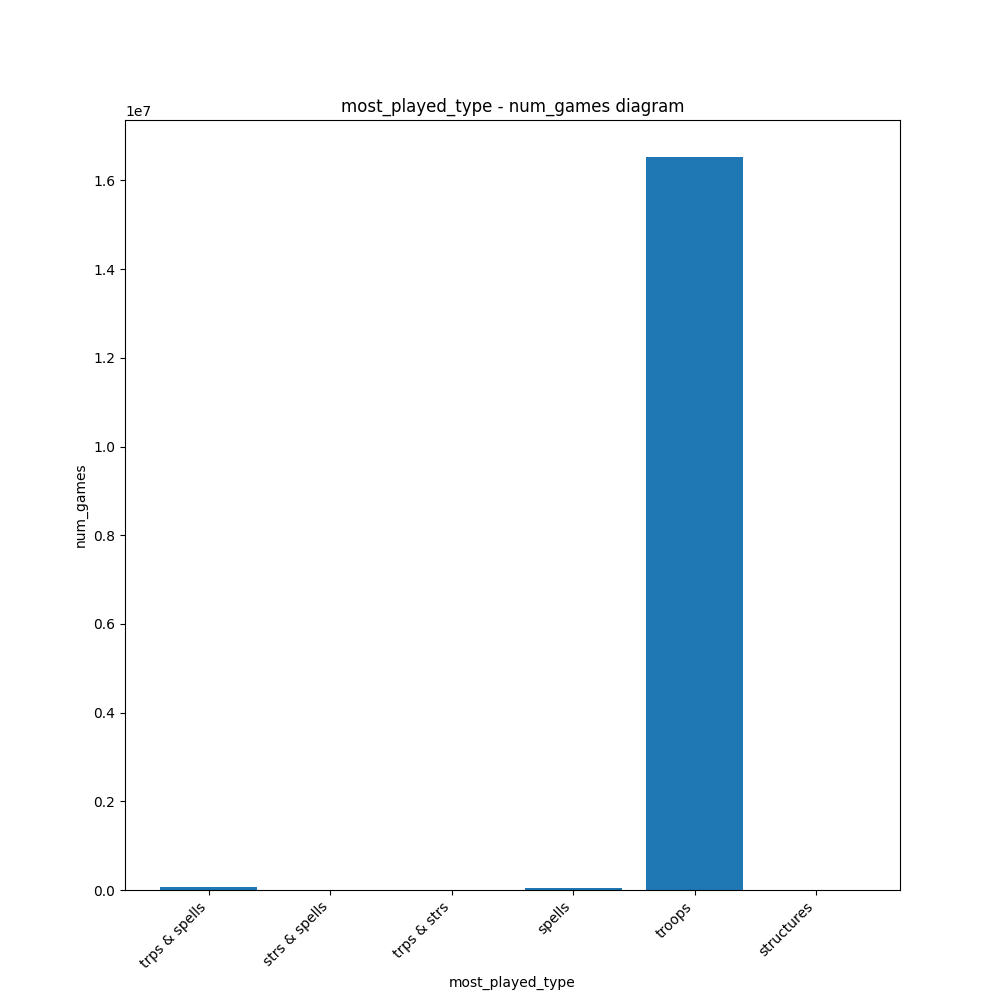
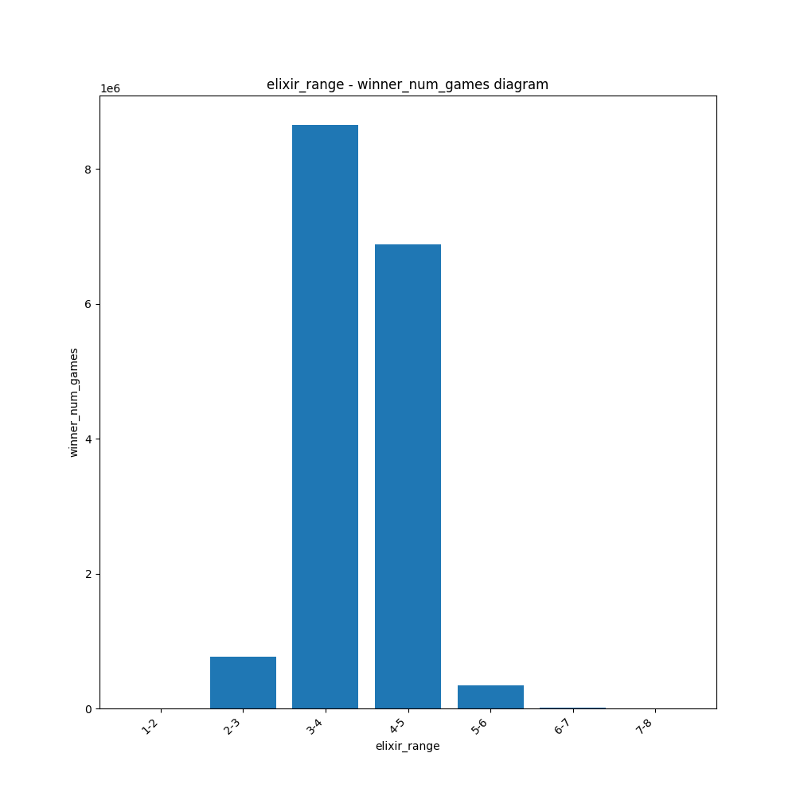
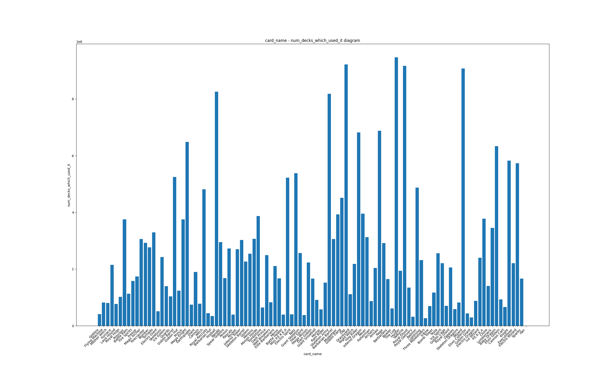
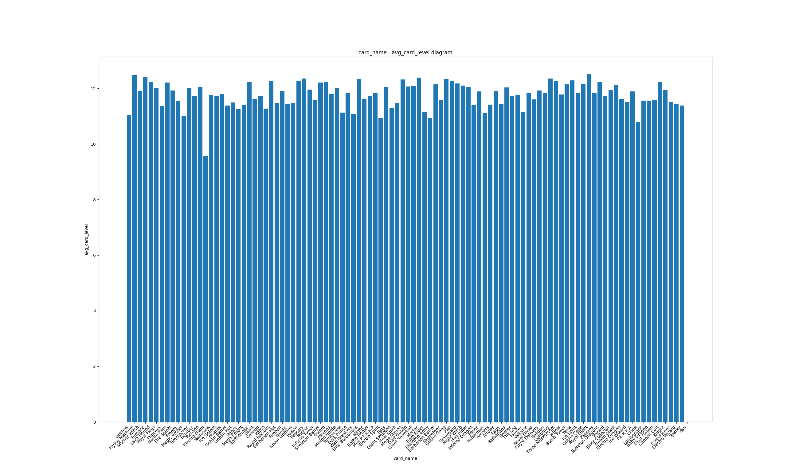

Clash Royale
Clash Royale es uno de los juegos más populares de plataforma móvil. Se trata de un juego de estrategia en tiempo real en el que los jugadores se enfrentan con el objetivo de destruir las torres del enemigo usando cartas con diferentes características. Hemos analizado este juego utilizando técnicas de Cloud Computing como Spark para poner analizar diferentes estadísticas que se producen durante las partidas.
A continuación, se muestran algunos de los análisis que hemos realizado:
Top 100 jugadores con más victorias
Hemos identificado a los 100 jugadores con más victorias en Clash Royale en la temporada 18. En el siguiente gráfico, se muestra el tag de los jugadores y el número de victorias que han obtenido. Luego, hemos usado una API de Clash Royale para obtener el nombre de los jugadores a partir de su tag. Los 5 jugadores con más victorias son:
- Tag: #9Q90P0Y0 - Nombre: JonKim - Victorias: 471
- Tag: #8LJCCUL22 - Nombre: CHN丨Rakan❤️Lava - Victorias: 440
- Tag: #PRQP9R9G2 - Nombre: チョップ吉田 - Victorias: 437
- Tag: #9LQJ0QYV2 - Nombre: gill - Victorias: 433
- Tag: #UQYR8Y9G - Nombre: FiddlingTacocat - Victorias: 414
Número de partidas en cada hora
Hemos observado cuantas partidas se han jugado en cada hora del día.
En el siguiente gráfico, se muestra el número de partidas jugadas en cada hora.
Como se puede observar, el número de partidas jugadas es mayor entre las 22:00 y las 6:00 (CET).
Tipo de carta más jugada
En Clash Royale existen diferentes tipos de cartas. Se pueden clasificar en 3 tipos: tropas, hechizos y edificios. Hemos analizado cuál es el tipo de carta más jugado en las partidas. Hemos comprobado que el tipo de carta que más se juega son las tropas con una amplia diferencia respecto al resto.
Número de partidas en cada rango de elixir
En las partidas del Clash Royale, los jugadores cuentan con una barra que contiene 10 unidades de elixir, que se van regenerando con el tiempo a medida que se gastan en las cartas. Cada carta tiene un coste de elixir que se debe gastar para jugarla. Hemos analizado cuales suelen ser los rangos de elixir en los que se juegan las partidas. Hemos observado que el rango de elixir más común es de 3 a 4 unidades tanto para el ganador como el perdedor de la partida.
Número de veces que se juega cada carta y nivel medio
Hemos analizado cuántas veces se juega cada carta en las partidas y el nivel medio de las cartas jugadas. En el siguiente gráfico, se muestra el número de veces que se juega cada carta y el nivel medio de las cartas jugadas. Como se puede observar, la carta más utilizada es "El Tronco", siendo usada en 9467868 mazos; y la que cuenta con más nivel medio es el Gigante Noble, con 12.509413949070867.
 